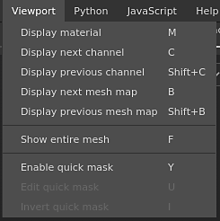

The viewport menu can be used to change the display mode of the Viewports.
| Action | Description |
|---|---|
| Display material | Switch the viewports to Material mode which shows the 3D model with lighting and shading. |
| Display next channel | Switch the viewports to solo mode to display the next Texture Set channel. |
| Display previous channel | Switch the viewports to solo mode to display the previous Texture Set channel. |
| Display next mesh map | Switch the viewports to solo mode to display the next baked Mesh map type. |
| Display previous mesh map | Switch the viewports to solo mode to display the previous baked Mesh map type. |
| Show entire mesh | Adjust the viewport camera to center it on the 3D model. |
| Enabled quick mask | See the Quick mask page for more information. |
| Edit quick mask | See the Quick mask page for more information. |
| Invert quick mask | See the Quick mask page for more information. |
For more information about the display modes see the Display settings.
For more information about the Quick Mask see the dedicated page.